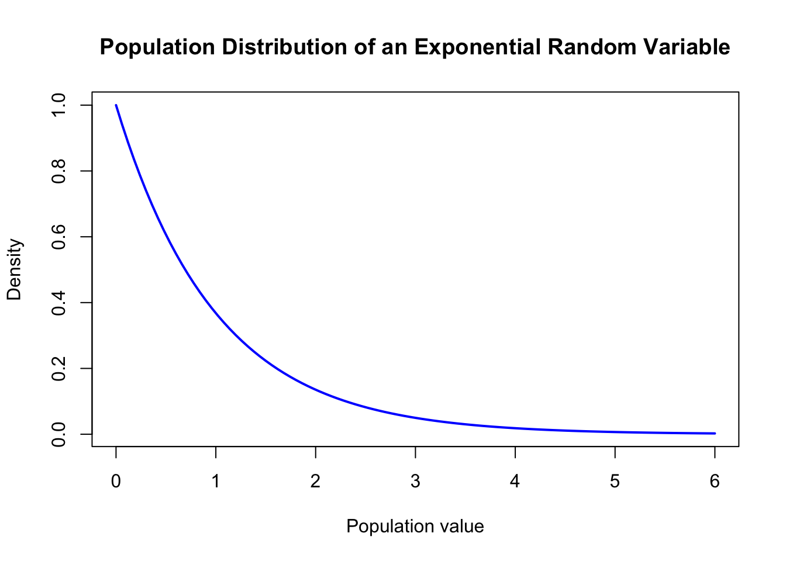
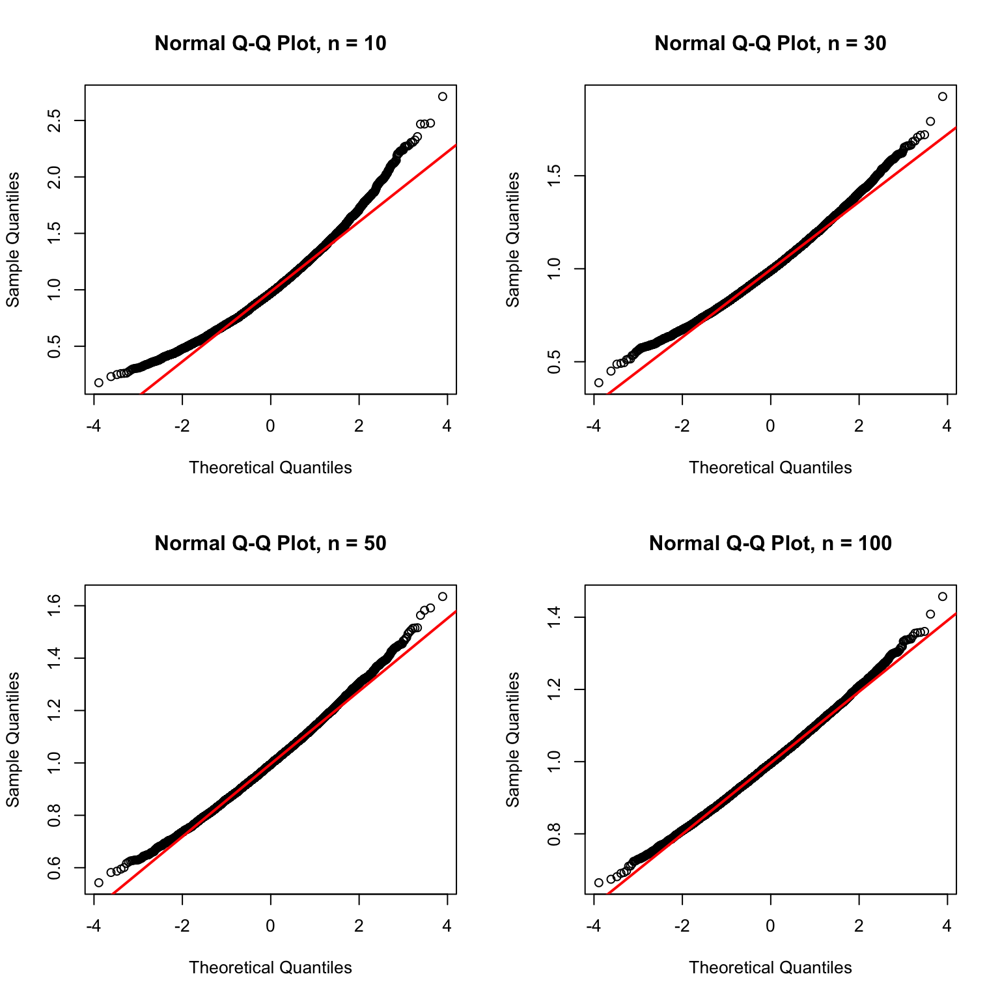
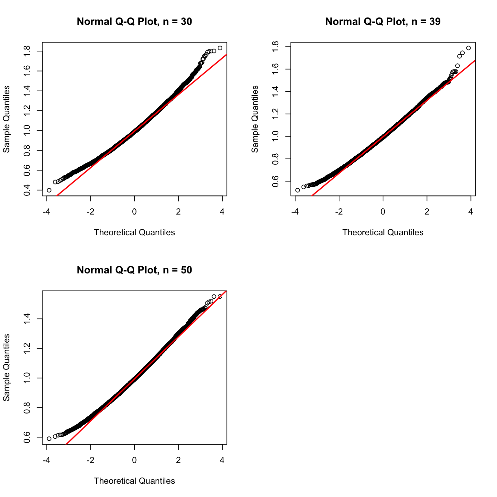

How large does the sample size (n) need to be for the sampling distribution of the mean from an exponential population to become normal enough?
Theoretical Expectations
I will use an exponential population with rate parameter \(\lambda = 1\).
For an exponential population with rate \(\lambda = 1\), the population has a mean of 1 and a standard deviation of 1. It is strongly right-skewed, meaning that most values are closer to zero while a smaller number of values extend farther to the right. Its excess kurtosis is 6, which shows that it has heavier tails and more extreme values than a normal distribution.
The original exponential population is strongly right-skewed and does not have a bell-shaped distribution. I expect the sampling distribution of the mean to become more symmetric and approximately normal as (n) increases.
Because the exponential population is more skewed and has heavier tails than a normal population, I expect it to require a larger sample size before the sampling distribution looks normal enough. I also expect the simulated standard error to become closer to the theoretical standard error as (n) increases.
Original Population Distribution
curve(dexp( x,rate = population_rate ),from =0,to =6,col ="blue",lwd =2,main ="Population Distribution of an Exponential Random Variable",xlab ="Population value",ylab ="Density")

The original population is strongly right-skewed. The highest density is near zero, and the curve gradually decreases as the population values increase. The long right tail represents occasional larger observations.
Here, (n) is the number of exponential observations in one sample. The value reps is the number of repeated samples used to create the sampling distribution.
Broad-Range Simulations
The seed is reset immediately before running the simulations so that the results are reproducible.
Running simulation for n = 1
Running simulation for n = 5
Running simulation for n = 10
Running simulation for n = 20
Running simulation for n = 30
Running simulation for n = 50
Running simulation for n = 75
Running simulation for n = 100
Each value of (n) produces 10,000 simulated sample means.
This table allows me to compare the simulated mean, standard error, skewness, kurtosis, outliers, and tail behavior across the different sample sizes.
As (n) increases, the simulated mean should remain close to the theoretical mean of 1. The simulated standard error should also become close to the theoretical standard error. The skewness and excess kurtosis should generally move closer to zero as the sampling distributions become more normal.
For smaller values of (n), the sampling distributions are still right-skewed because the original exponential population is strongly right-skewed. As (n) increases, the distributions become more symmetric and more bell-shaped.
The red curve shows the normal distribution with the theoretical mean and standard error for each value of (n). The histograms should become closer to the red curve as the sample size increases.
Broad-Range Normal Q-Q Plots
par(mfrow =c(2, 2))for (n in broad_histogram_values) { means <- broad_means[[paste0("n_", n)]]qqnorm( means,main =paste("Normal Q-Q Plot, n =", n) )qqline( means,col ="red",lwd =2 )}

par(mfrow =c(1, 1))
For smaller values of (n), the points are expected to curve away from the red line because the sampling distribution is still affected by the right-skewed exponential population.
As (n) increases, the points should follow the red line more closely. This indicates that the sampling distribution is becoming more similar to a normal distribution.
The simulated standard errors should generally follow the theoretical curve. The theoretical standard error decreases as (n) increases because averaging more observations reduces the spread of the sample means.
Choosing the Refinement Interval
After examining the broad-range results, I selected two sample sizes that bracketed the transition to approximately normal behavior.
I selected this interval because the lower boundary still showed some evidence of skewness, while the upper boundary appeared more symmetric and closer to normal. Testing every integer between these boundaries allows me to identify the smallest sample size that looks normal enough.
Running simulation for n = 30
Running simulation for n = 31
Running simulation for n = 32
Running simulation for n = 33
Running simulation for n = 34
Running simulation for n = 35
Running simulation for n = 36
Running simulation for n = 37
Running simulation for n = 38
Running simulation for n = 39
Running simulation for n = 40
Running simulation for n = 41
Running simulation for n = 42
Running simulation for n = 43
Running simulation for n = 44
Running simulation for n = 45
Running simulation for n = 46
Running simulation for n = 47
Running simulation for n = 48
Running simulation for n = 49
Running simulation for n = 50
This tests every integer sample size between the two selected boundaries.
The histogram for the lower boundary can still show some right-skewness. The histogram for the selected sample size should have a more balanced and approximately bell-shaped pattern. The upper boundary provides a comparison showing how the shape continues to improve as (n) increases.
Fine-Grained Normal Q-Q Plots
par(mfrow =c(2, 2))for (n in refined_plot_values) { means <- refined_means[[paste0("n_", n)]]qqnorm( means,main =paste("Normal Q-Q Plot, n =", n) )qqline( means,col ="red",lwd =2 )}par(mfrow =c(1, 1))

The Q-Q plot for the lower boundary may still curve away from the red line, especially in the upper tail. The Q-Q plot for the selected sample size should be closer to a straight line. The upper boundary shows whether the alignment improves further for larger sample sizes.
Selected Sample Size
For the Exponential Population, I selected (n =) 39 as the smallest sample size that appeared normal enough.
For the broad investigation, I examined (n = 1, 5, 10, 20, 30, 50, 75,) and (100). I compared the histograms, normal Q-Q plots, skewness, kurtosis, simulated standard errors, and tail behavior for these sample sizes.
The broad results showed that the smaller sample sizes were still affected by the strong right-skewness of the exponential population. As (n) increased, the sampling distributions became more symmetric and closer to a bell-shaped curve. I then selected the refinement interval from (n = 30) through (n = 50) and tested every integer sample size in that interval.
The selected sample size was (n =) 39. Its histogram was more balanced and approximately bell-shaped than the histograms for the smaller sample sizes. The normal Q-Q plot was also closer to a straight line, although it was not perfectly straight.
The skewness at (n =) 39 was closer to zero than it was for the smaller sample sizes. The excess kurtosis also moved closer to zero, showing that the sampling distribution was becoming more similar to a normal distribution.
The simulated mean was close to the theoretical population mean of 1. The simulated standard error was also close to the theoretical standard error:
The exponential population has a long right tail, so some larger sample means and outliers are expected. However, the tail behavior became less extreme as (n) increased and did not prevent the selected sample size from appearing normal enough.
The numerical comparisons supported the visual evidence by considering the mean error, standard-error error, and Q-Q plot straightness. I selected the smallest sample size that met the numerical criteria and also looked normal enough in the plots.
CLT Assumptions and Limitations
The exponential observations are independent and identically distributed, and the population has a finite mean and finite variance. Therefore, the usual Central Limit Theorem applies.
The original exponential population is strongly right-skewed and has a long right tail. Because of this, smaller sample sizes can still produce sampling distributions with visible skewness and extreme values. As the sample size increases, averaging reduces the influence of individual large observations, so the sampling distribution becomes more symmetric and approximately normal.
The definition of “normal enough” is somewhat subjective. It depends on the histogram, Q-Q plot, numerical diagnostics, and how closely the simulated results match the theoretical values. A different set of criteria could lead to a slightly different selected sample size.
Reproducibility Check Using a Different Seed
The original simulations used the last four digits of my student ID, 4160, as the random seed. I repeated the Exponential simulation using a different seed to check whether the results were reproducible.
set.seed(9876)alternate_means <-replicate( reps,mean(rexp(39,rate = population_rate ) ))alternate_mean <-mean( alternate_means)alternate_standard_error <-sd( alternate_means)alternate_results <-data.frame(simulated_mean = alternate_mean,simulated_standard_error = alternate_standard_error)knitr::kable( alternate_results,digits =4,caption ="Exponential Results Using a Different Seed")
Exponential Results Using a Different Seed
simulated_mean
simulated_standard_error
1.0017
0.1589
The exact numerical results changed slightly when the seed changed. This is expected because Monte Carlo simulations use randomly generated samples.
However, the overall conclusion remained similar. The simulated mean stayed close to the theoretical mean of 1, and the simulated standard error stayed close to the theoretical standard error:
This shows that the exact numerical results depend on the random seed, but the overall pattern and conclusion were reasonably stable.
Conclusion
For the Exponential Population, I selected (n =) 39 as the smallest sample size that appeared normal enough.
The original exponential population was strongly right-skewed with a long right tail. As the sample size increased, the sampling distribution of the mean became more symmetric and more similar to a normal distribution.
At the selected sample size, the histogram was approximately bell-shaped, and the normal Q-Q plot was reasonably close to a straight line. The simulated mean was close to the theoretical mean of 1, and the simulated standard error was close to the theoretical value (1/). Skewness and excess kurtosis were also closer to zero than they were for smaller sample sizes.
Some extreme values and right-tail behavior remained because the original population is exponential. However, these effects became less influential as (n) increased. Therefore, (n =) 39 was my evidence-based choice for when the exponential sampling distribution became normal enough.